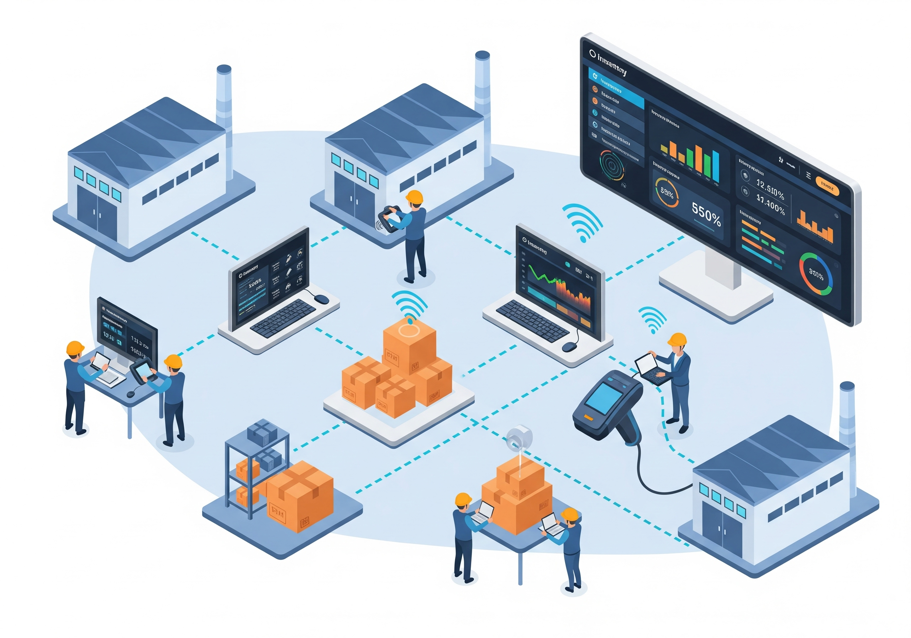
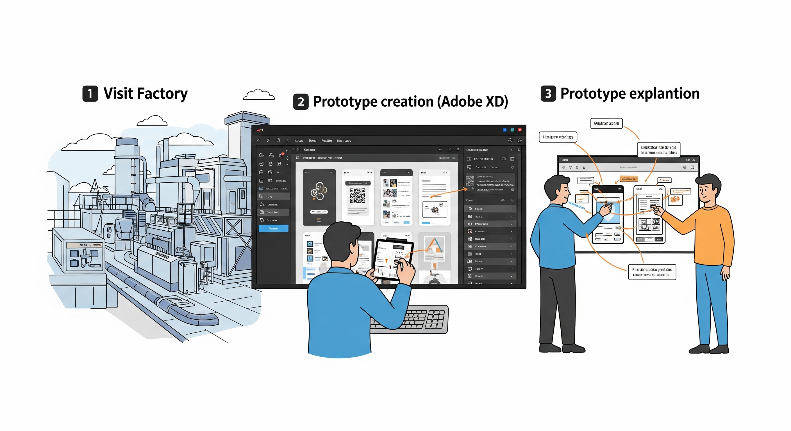
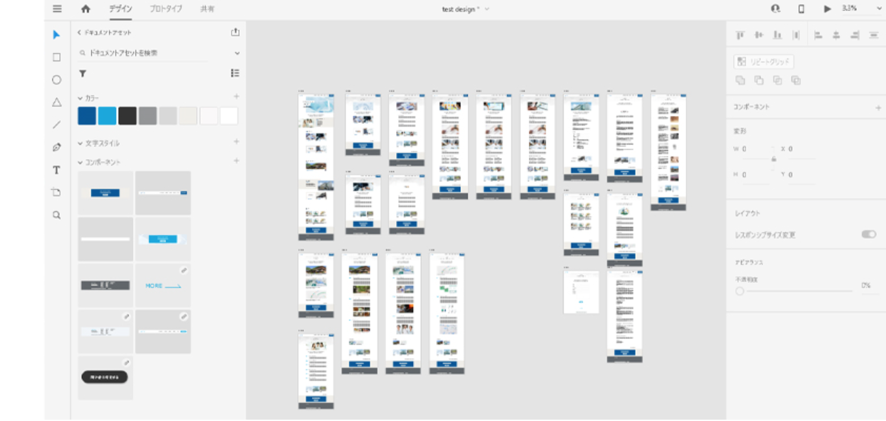

- PROFILE :
- 西崎慧 Nishizaki Kei
和歌山県和歌山市 出身
和歌山大学システム工学部メディアデザインメジャー 卒業
- CONTACT :
- nszkki.19981116@gmail.com
- ADDRESS :
- 大阪府大阪市
Osakashi, Osakafu Japan


初めてのプロジェクトを経験し、開発プロセスを一通り経験した。
また部署内では従来はExcelとHTMLの画面設計だったが、大学での経験を活かしツール(XD)での設計を提案しプロジェクト推進に貢献した。
■概要
大手素材メーカーJ事業部において、棚卸業務の効率化と在庫精度の向上を目的に、棚卸システムを設計・実装。
販売・物流管理システムに棚卸機能を追加することで、リアルタイム在庫更新・業務自動化を実現。

J事業部の棚卸業務については下記の課題があり、本プロジェクトではその課題を解決するべくシステム化を目指した。
・各拠点で棚卸方法が異なり、集計・整合に工数がかかっていた
・在庫情報がシステムにリアルタイム反映されず、差異が頻発していた
・棚卸時の記録ミスや重複入力など、ヒューマンエラーが多発

J事業部が抱える工場での棚卸業務の課題を解決するべく下記の大きな目的をもって棚卸システムを開発した．
・棚卸作業の効率化と業務標準化
・在庫精度の向上による生産計画の安定化

本プロジェクトでは開発担当者としてアサインされた。
開発だけでなく製造フェーズ以外にも参加し、一通りの開発プロセスを経験した。

本プロジェクトでは主に下記の技術を利用した。
・Webアプリ開発：Java／SQL Server
・モバイル開発：Swift／Go
・IoT：RFIDリーダー／バーコードリーダー
・その他：Adobe XD

本プロジェクトではデザインツール(XD)を用いて画面デザインを作成。 結果的に顧客や開発者との設計による認識齟齬を無くし、開発の生産性向上に繋げることができた。



このプロジェクトは私にとって初めての業務システム開発経験であり、開発の難しさと同時に、SI案件へのやりがいを感じた案件であった。 現場ごとに異なる運用を理解し、最適なUI・操作フローを設計する中で、ユーザビリティの重要性を実感した。 特に、業務フローの可視化と画面モック作成のために提案したデザインツール（Adobe XD）の導入が受け入れられ、現場担当者との認識のズレを防ぐことができた。 これはプロジェクト全体の推進力となり、開発チームや現場からも高く評価される結果なった。 最終的に、棚卸作業の時間が大幅に短縮され、在庫差異の大幅な削減にも成功した。 ユーザーから「現場作業が楽になった」と直接感謝の言葉をいただけたことが、今でも強く印象に残っている。
棚卸システムは既存の基幹システムとのリアルタイムに連携